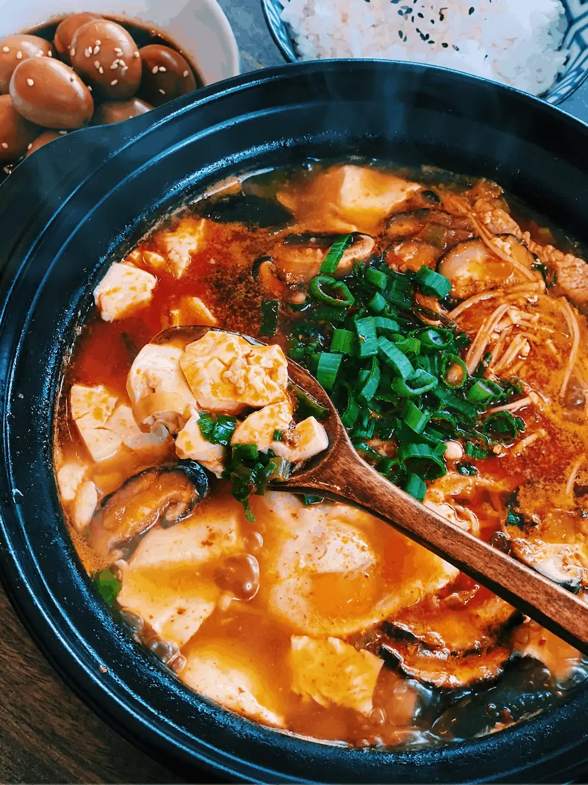

Sundubu Jjigae

Description
Sundubu jjigae is a Korean stew made with soft (uncurdled) tofu as a highlight ingredient.
Ingredients
Main
- 350g Korean soft tofu
- 110g littleneck clams or pipis, cleaned
- 3-4 banana prawns, head, shells and guts removed
- 100g enoki mushrooms, stems removed and rinsed
- 2 small shiitake mushrooms, cleaned, stems removed and thinly sliced
- egg
- 1 stalk of green onion, thinly sliced
Soup Base
- 1.5 cups dried kelp and anchovy stock
- 1 Tbsp Korean chili oil or neutral cooking oil
- 2 Tbsp Korean chili powder or Korean chili flakes
- 1 tsp minced garlic
- 1/2 Tbsp Korean fish sauce
- 1/2 Tbsp Korean soup soy sauce or regular kikkoman soy sauce
- fine sea salt, to taste
- A few sprinkles of ground black pepper
- A dash of sesame oil
Steps
- Start heating the pot on the stove over medium low heat and add the chili oil, chili powder, and garlic. Stir them well for about 1 min. Make sure not to burn the chili powder.
- Add the clams and shrimps and stir quickly to coat them with the chili sauce. Add the fish sauce and soy sauce then stir.
- Add the dried kelp and anchovy stock and boil it on medium-high heat until it starts to boil rapidly (2 to 3 mins).
- Add the tofu, mushrooms, and egg and cook them for another 2 to 3 mins. Season with salt, if required.
- Top up with the green onion, black pepper and sesame oil. Serve hot with Korean rice and side dishes (banchan).